October, 2025
For various RF applications, an oscillator is a useful block to have. For example, as an LO source when coupled with a PLL, or to power a cheap motion sensing radar, etc.
There are many such oscillators on the market, but ones that come as a prebuilt module are usually pretty expensive at these frequencies, but in theory they should be very cheap to make since there are affordable products that use these such as cheap motion sensing radars, satellite LNBs, etc. These often use either typical LC type resonators, or DROs (dielectric resonator oscillators). DROs are good, but apart from harvesting them out of cheap HB100 modules, I could not find any good supplier for the ceramic resonators for these.
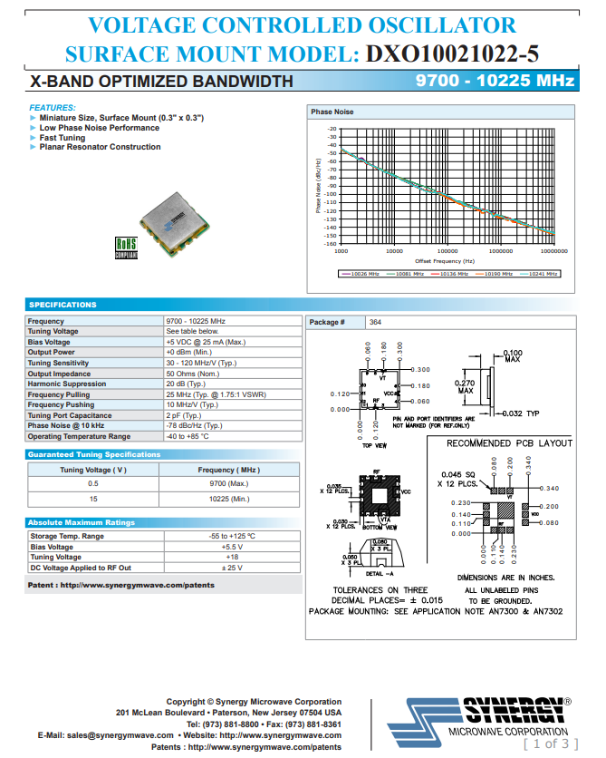
Here is an example of a COTS VCO unit. This would be perfect for a wide variety of projects, but from a quick call with Synergy Microwave, the price was kind of impractical for most projects at around $90 USD per unit.
For these reasons, I decided to try to design my own cheap oscillator in the X band. It would be nice to have it be a VCO, but for now, I will try to just get a simple one to work.
So the requirements are as follows:
- Fixed frequency at around 10 GHz (harmonics must be >10 GHz)
- Be made of only cheap, discrete BJTs and passive components
- >0 dBm output power at fundamental frequency
- Run on <3 VDC
So now I had the requirements. I then proceeded to design the oscillator as a negative resistance, microstrip resonator based oscillator.
First I worked on the active circuit. This would be based on a BFP840E SiGe BJT from Infineon. These have an obsurd transition frequency at around 85 GHz under ideal conditions. This is much higher than the planned operating frequency of 10 GHz, but the extra Ft should allow for a good amount of gain at 10 GHz. I then planned out the DC biasing circuit. Admittedly I am pretty new to RF oscillator design, and I was not too sure of which topology was best. But I decided on a common base amplifier design, which seemed to be a pretty common configuration.
Random side note: The Infineon catalog of SiGe RF HBTs is quite nice because they provide a Gummel-Poon SPICE model for every product in the family. This is very different from most other manufacturers. For example, I wanted to try using a CEL CE3514M4 pHEMT since it was the cheapest X band FET on Digikey, but although they do have large signal models, they are provided by a third party (Modelithics) as part of their COMPLETE Library product, which costs over $10k per year and is completely inaccessible for anyone that isn't part of a company, so I kind of gave up on that idea. At the very least they do actually provide a table of small signal S parameters at various DC bias points, but that is besides the point.
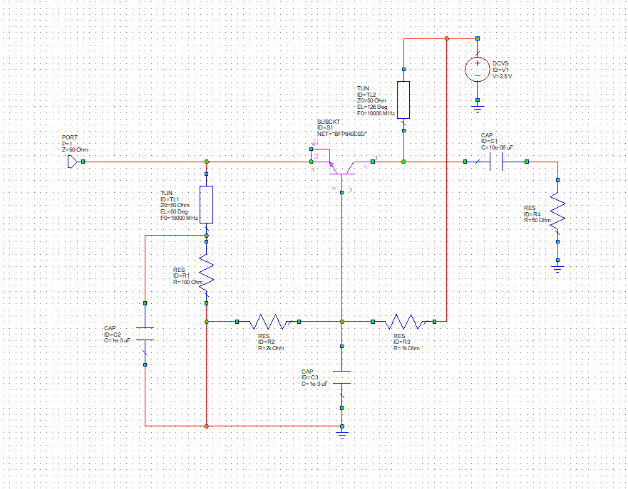
in Cadence AWR, I drew up this circuit using Infineon's provided BFP840E SPICE model. The transmission line values were determined without much theoretical math, but rather just through messing around with AWR's tuner tool to see which values provided a good negative resistance at the relevant frequency band. In this case, the DC bias point is set mainly by the resistor divider formed by R3 and R2, which should be close to 2/3 the supply voltage. The quiescent current is mainly set by R1, and assuming a high DC gain, the current can be roughly approximated by \( \frac{\frac{R2}{R2 + R3} V_{supply} - 0.7}{R1} \), which is also \( \frac{V_{base} - 0.7}{R1} \). Plugging in the values at 2.5V supply, this yields roughly 9.7 mA.
C2 and C3 are bypass capacitors, acting as an RF short to the nodes they are connected. Though not shown in the AWR schematic, to help cover the nonidealities (equivalent series inductance, mostly) of the ceramic capacitors, I later also attached some tapered quarter wave open ended stubs to these nodes to further reduce the impedance to ground to close to zero. C1 is a DC block, and the collector is biased through a short microstrip transmission line.
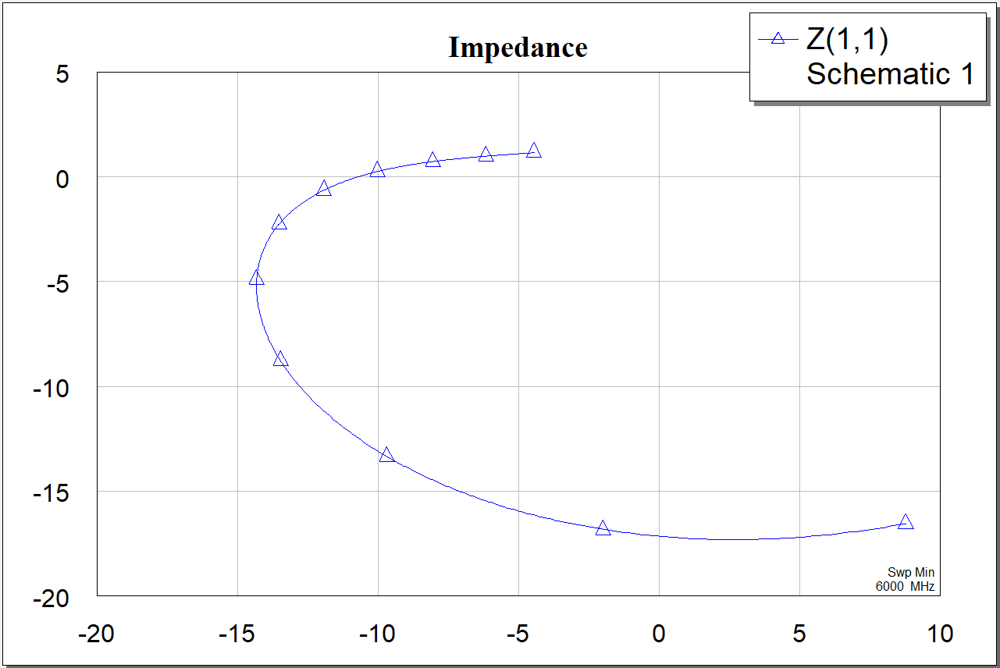
This is a plot of the simulated input impedance of the oscillator, swept from 6 GHz to 12 GHz. For the oscillator to sustain itself, we need \( Re(Z_{resonator}) + Re(Z_{active}) = 0 \), so that the equivalent damping factor is zero. As we can see here, for the emitter port of the active circuit, for the relevant frequencies, the real input impedance is negative. Without this, sustained oscillation would not be possible.
Now for the resonator. A nice resonator would be a little puck of ceramic, like this.

Image source: Radartutorial.eu
These have a very high Q factor, leading to extremely low phase noise and good stability if designed well. Unfortunately however, Digikey, Mouser, Arrow, LCSC, and every other site I checked all don't sell these. I didn't want to get them from ebay or alibaba since I kind of wanted a reliable source, so I couldn't use these. Instead, I opted for a simple section of microstrip transmission line of around 37 degrees at 10 GHz. This length was also picked using AWR's tuner tool, so I can't really explain why it is what it is.
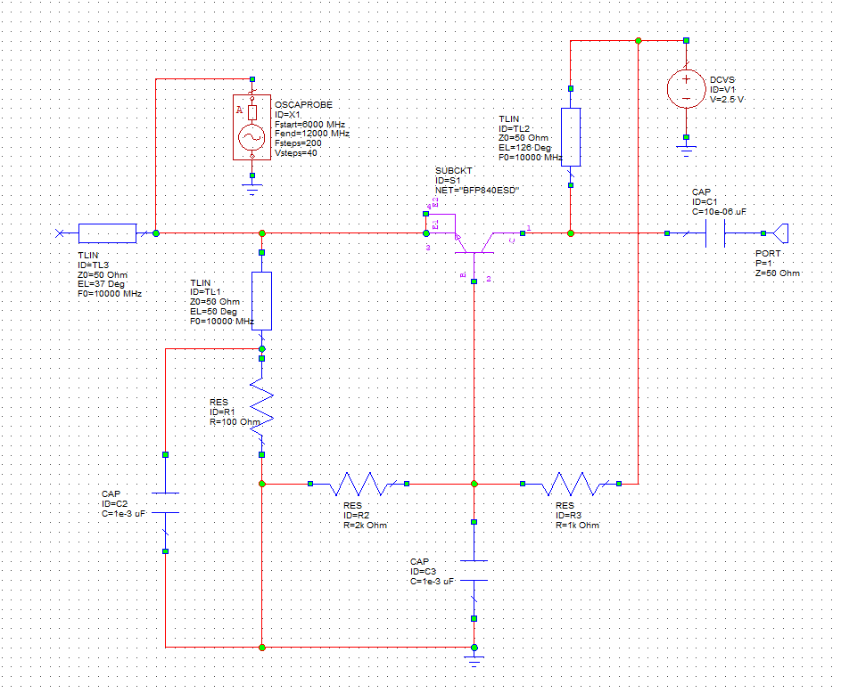
Putting the two together, this is what results. I moved the port over to the output side, and also added an OSCAPROBE element in the AWR schematic. This is required for simulation of an oscillator. I believe it provides an excitation source for the oscillations. And regarding the simulation, I used the Nonlinear->Power->Pharm measurement with source set to PORT_1. This simulation uses AWR's harmonic balance solver, and provides a graph of power plotted over frequency. At some point I had some issues with the convergence of the harmonic balance simulation, and sometimes it would fail depending on values of microstrip segments on the schematic. The transistor models are labelled as "valid up to 12 GHz", and since I am operating quite close to that limit, that might be why.
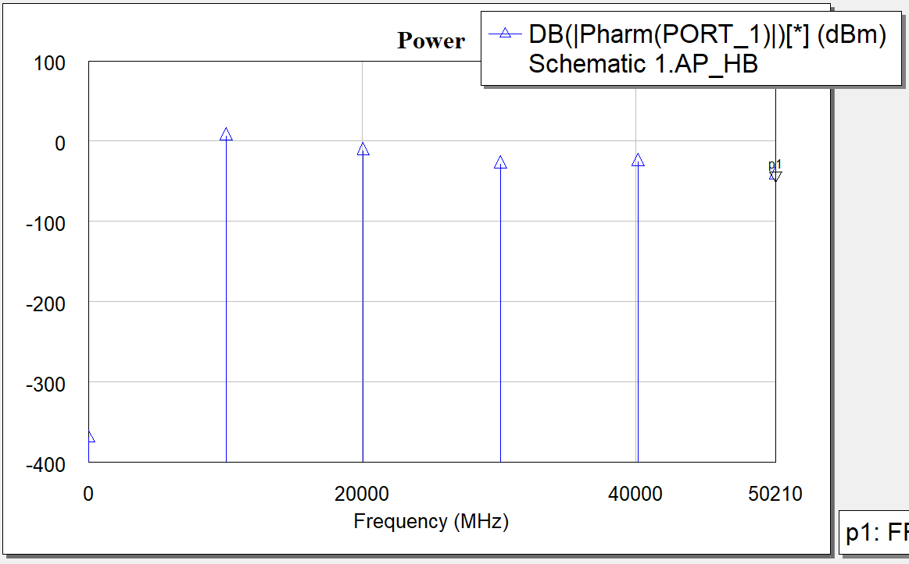
This is the output. The fundamental frequency is very near 10 GHz at just over 6 dBm amplitude. This is a good amount of power, so I moved to drawing up a test PCB in KiCAD. For something this simple (in terms of component count), I thought KiCAD would be sufficient over Altium, although I could have used that too.
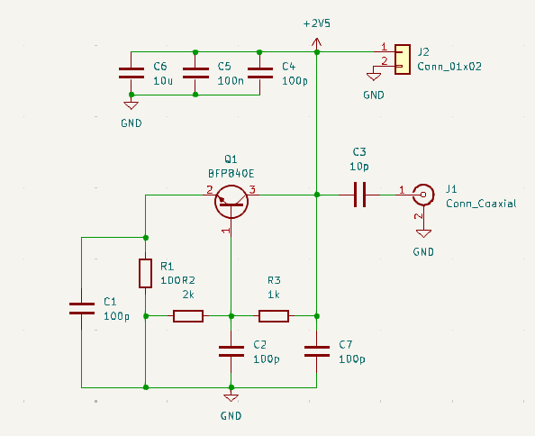
This is the schematic for the test PCB. Of course this by itself doesn't really make a lot of sense, since the microstrip elements are not represented here, so a lot of features are either shorted or missing. This is just to make connecting the PCB together a bit easier. This workflow is not super ideal, and I am still kind of looking for a good workflow for PCBs involving both integrated microstrip components and lumped ones.
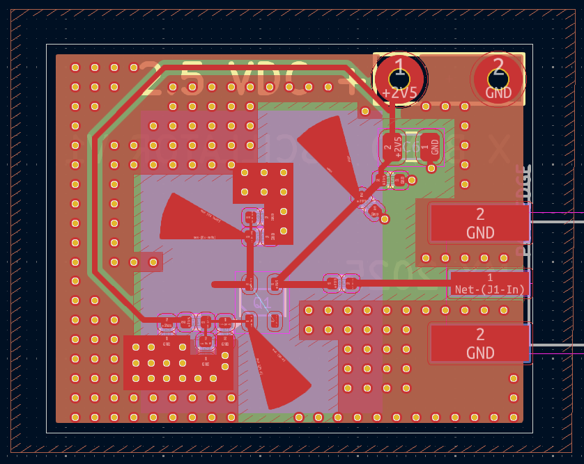
This is the design I whipped up. There are a lot of vias, but they don't cost very much if the board is produced by a PCB fab house. The pizza slice things are the quarter wave stubs meant to produce a near zero impedance at a particular point, and that one stray looking trace from the transistor emitter is the resonator. I am not sure about what to do about that extra emitter, I could connect them together, but that distance is like almost a 40 degree microstrip, so I will leave it floating for now. I will have to see after I receive the PCBs to test them.
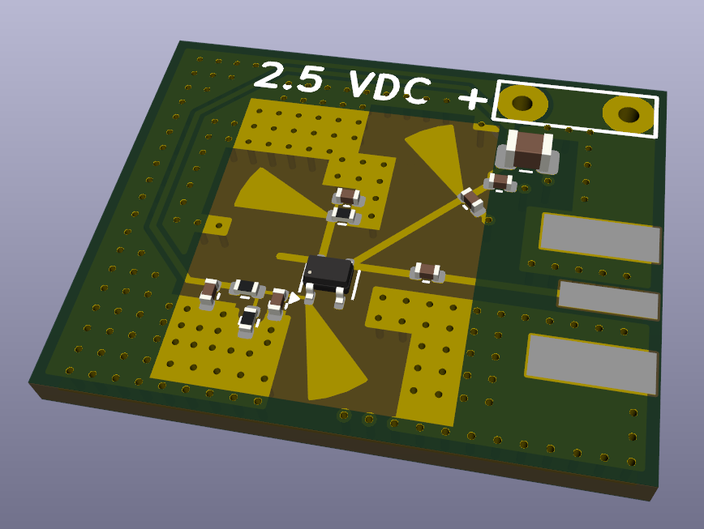
Now we wait to see if these actually work (Would be pretty funny if they don't)
(About two weeks later:)
20 October, 2025, the PCBs arrived.

The PCBs were cheap from China, but they looked pretty good. The gold ENIG finish would have looked nicer, but would have been more expensive. Also, as you can probably tell, this PCB is kind of a 3-in-1 to save costs. I might write up articles for those other two as well at some point. Currently I have not populated them, and I have not tested them yet since I ran out of connectors.
I then proceeded to apply solder paste with the syringe and place the components. I am also not in a place where I have easy or convenient access to a reflow oven, and I discovered that with a little care, you can actually just use an electric stovetop to reflow your PCBs. I laid a few layers of aluminum foil (conveniently doesn't stick to solder!) on the heater coils, and turned the heat to medium. In 2-3 minutes, the PCB got hot enough to reflow the solder paste. Also, in the past I have made the mistake of only reflowing the SMD components and trying to hand solder the SMA connectors. That is a bad idea because the ground planes and the connector all have huge thermal mass, so it is very difficult to solder it well with an iron, especially if your iron is rather low powered, like my TS100.
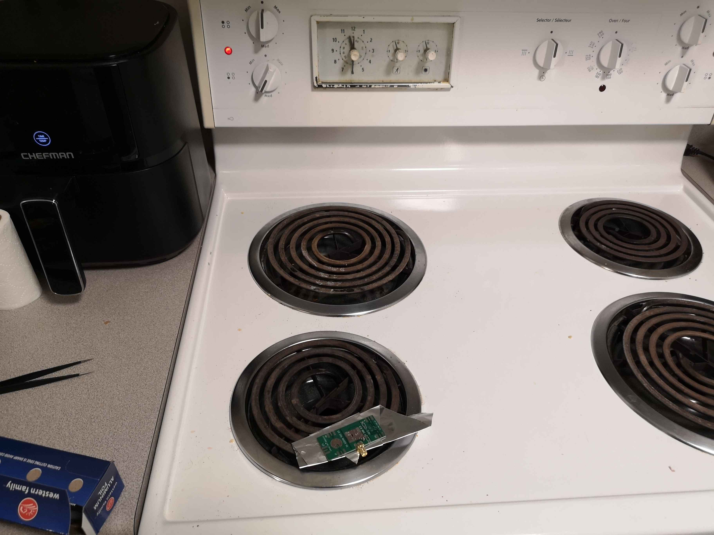
A way to kind of judge how long it might take is to put a small droplet of water on the PCB away from any components. When the water boils off, you can kind of extrapolate how long the reflowing will take, considering it will reflow at around 200 degrees Celsius for lead-free solder paste.
Anyways, the stove worked and this is the finished PCB.
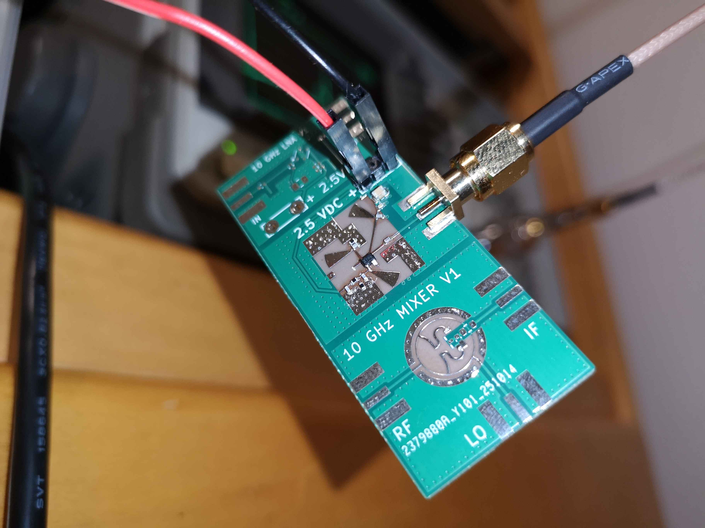
And here is the spectrum of the output, with a 20 dB attenuator.
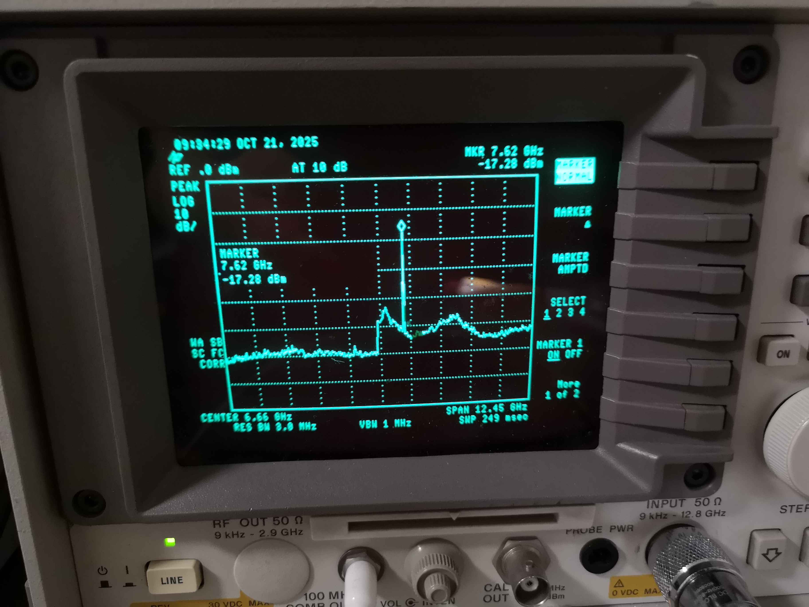
The frequency turned out to be around 8 GHz rather than the intended 10. I will need to investigate why this is the case, but my guess is that the dielectric constant of the FR4 is not constant with frequency, and at high frequencies it dropped a lot lower than the value I was using for the simulations.
However, the output power was really good at around +3 dBm. This is pretty decent considering the circuit was running on 2.5V at less than 10 mA.
Overall, I think this experiment was a success, and I will probably try to tweak the PCB so that it ends up actually being 10 GHz.